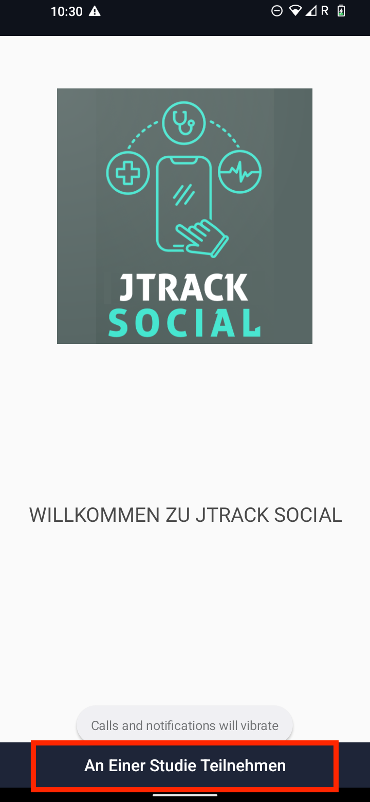
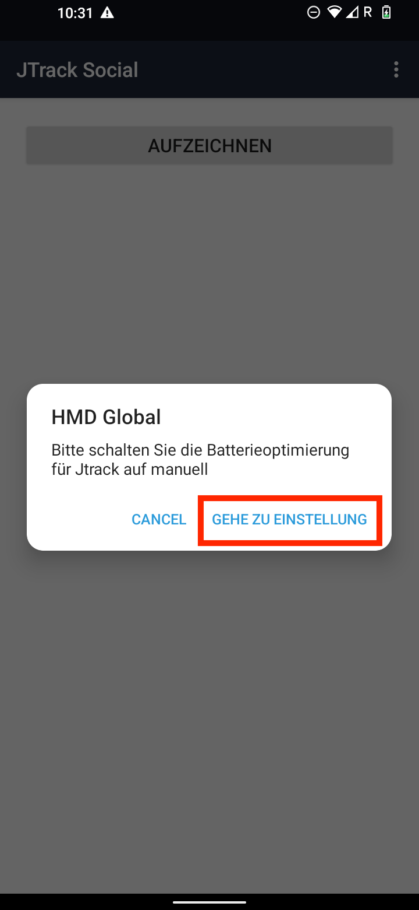
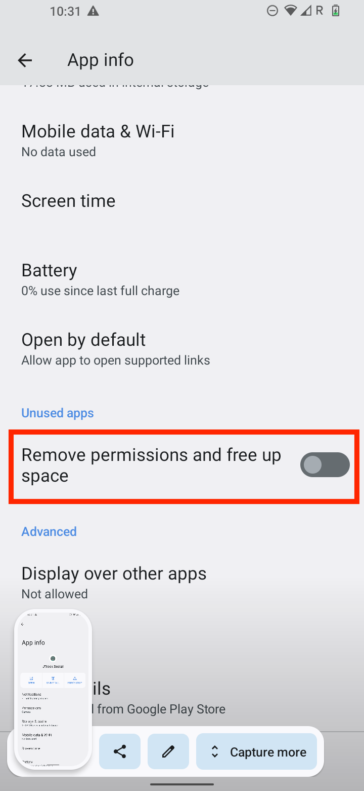
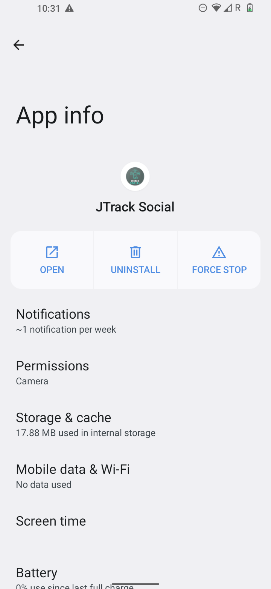
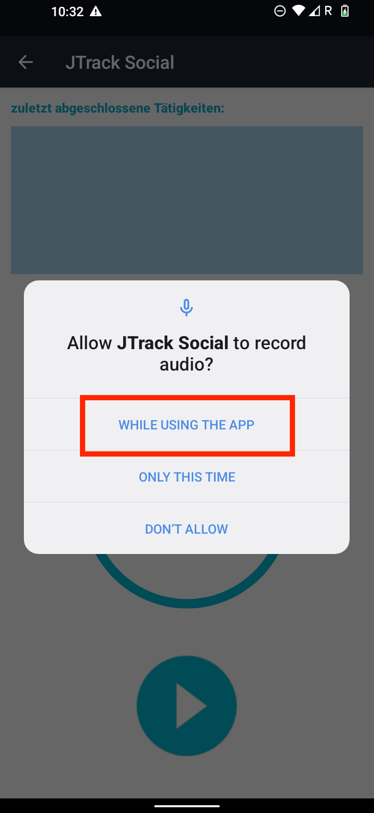
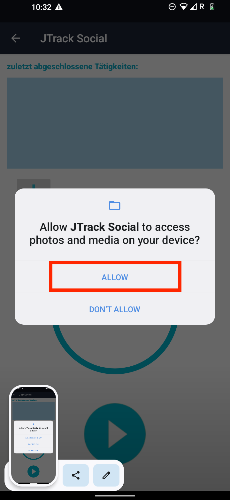

JTrack Social¶
to Install this app first go to the Google Play Store on your Android phone

once you installed the app, Open the JTrack Social App and click on Join study button.
{kind=link}

then accept the permission according to the following image

and the use the provided Qr-code to Join the Study, and Scan one code
Once the joining were successful, you will see the following screen which ask you to go the app setting page and change the settings according to the following steps
{kind=link}

Now scroll to find the “Remove permission and free up space”, and make sure that its disabled
{kind=link}

and then for the battery optimization
{kind=link}

and then select Unrestricted option according to the bellow image

Now the main setting of application is done, and the rest will depends on type of study, selected sensors. different permission according to the pre-selected sensors will be asked
Audio sensor: this sensor is responsible to record audio from app, Two permissions are required , First permission to access audio according to the bellow image
{kind=link}

and then permission about access to file, which is required to save the recorded files
{kind=link}
